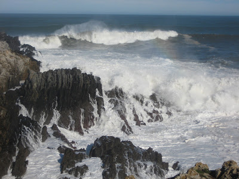

Desayuno cantábrico
Desayuno frente a ti,
Mar Cantábrico;
tú no me ves, ni yo alcanzo tus espumas;
pero sin duda te respiro
igual que tú notas en tus alas
el dulce crepitar de mi alma.
Desayuno frente a ti,
sincero Mar Cantábrico,
mientras viertes tu brisa,
florida de mañanas tardías,
por las estancias de este bendecido hogar.
Y, desayunando frente a ti,
dulce Mar Cantábrico de mi corazón,
me entrego a tus verdes colinas suaves,
me empapo de la luz velada de tu aire.
Porque tú, mi querido Mar Cantábrico,
sabiéndome hijo de las duras montañas
y los chopos de los campos,
me tomas en tus infinitos brazos
como a una ola más.
